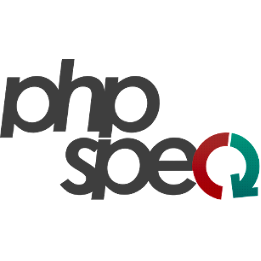
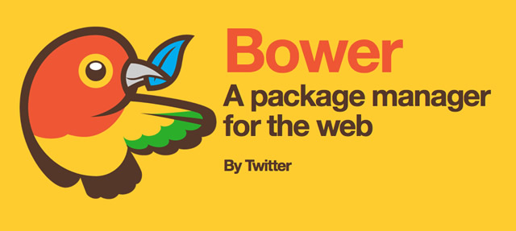

Kick-ass dev environment
Every Hero needs an utility belt!
To fight the crime in software development process
Whos talkin?

Gediminas Morkevičius aka @l3pp4rd
- A hardcore - ViM, Arch Linux, dwm user
- PHP, GO, C - coder
- And I share my stuff - github.com/l3pp4rd

So what tools we need to fight the crime in software development process?
Lets start with:
Bat throwers
In other words - testing tools
Bat mines
In other words - build tools

Gulp
Bower
Bat gun
In other words - deployment tools


Be Ansible Hero
Automate your deployment process
One playbook for all environments:
- Development + Vagrant
- Staging
- Production
Different inventory files for separate environments
Having roles for different reusable tasks
All configurations are in yaml
Convenient access to servers:
Bat Shield
In other words - service supervision
supervisord.org
vim /etc/supervisor.d/syncthing.ini[program:syncthing]
command=/home/gedi/bin/syncthing
process_name=%(program_name)s
user=gedi
numprocs=1
autostart=true
environment=HOME=/home/gedi
stdout_logfile=/var/log/supervisor/%(program_name)s.log
stderr_logfile=/var/log/supervisor/%(program_name)s.log
stdout_logfile_maxbytes=50MB
stdout_logfile_backups=5
sredirect_stderr=trueBatmobile
In other words - continuous integration - CI
Every build runs on fresh docker image
Simple admin panel to see builds:
Project dashboard (builds all new branches):
Thank you
Any Questions?

Slides are available at: slides.gediminasm.org
Powered by: Revealjs